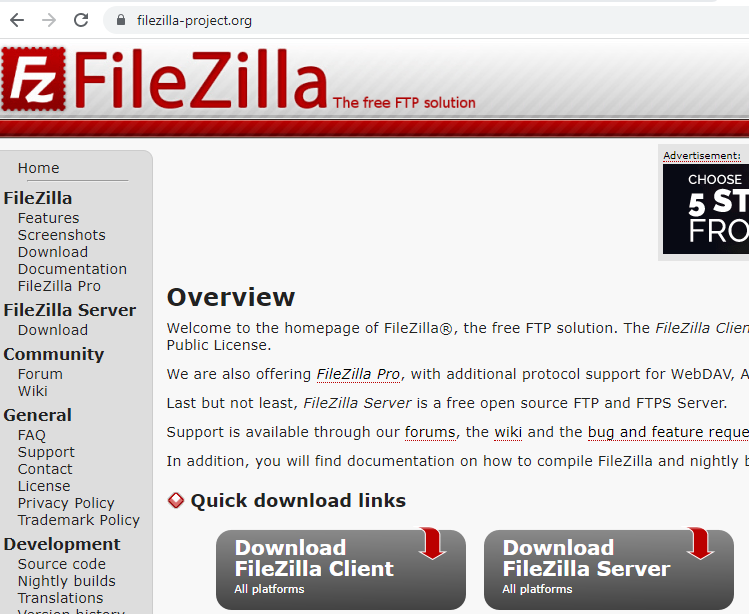
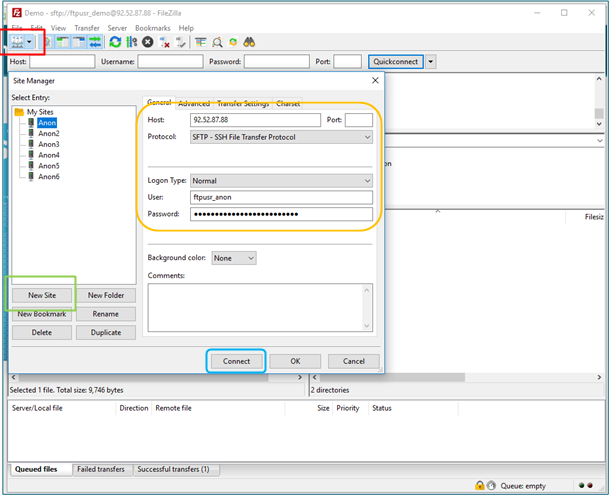
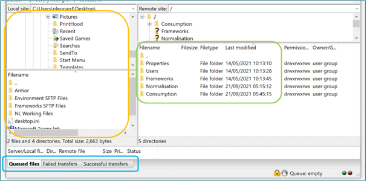
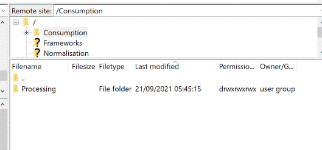

To initially set up a SFTP you will need to download FileZilla Client (green outline on screenshot below) from the following link: http://filezilla-project.org/.
This only needs to be done once, at the beginning as once you have downloaded and setup FileZilla you can access it from your start menu. Please be advised that you may need permission from your IT department to install this.

SFTP User Instructions
Opening FileZilla will take you to the screen below. Click on the symbol below file (red outline) and this will bring up the next box. Click on ‘New Site’ (green outline) and add the details provided by Cority to the relevant fields (orange outline):
Host = 147.75.21.131
Port = 22
Protocol = SFTP – SSH File transfer Protocol
Logon Type = Normal
Username = Client specific
Password = Client specific
Once you have done this click Connect (blue outline).
Once FileZilla has been set up on your computer and you have connected successfully, click on the arrow as indicated in the red outline and select your client name. This will connect you to the SFTP folders and you do not have to enter the username and password again.

Once you are successfully logged in you will see your own internal file tree on the left-hand side of the FileZilla screen (orange outline below) and on the right-hand side you will see your SFTP folders (green outline).
To transfer files to Cority follow these steps:

The following data templates should be uploaded to each SFTP folders:
| Folder Name | Files accepted into this folder |
| Properties | Node and datasource template |
| Users | Users template |
| Frameworks | Framework KPI template |
| Normalisation | Normalisation template (e.g. area, FTE) |
| Consumption | Environment templates (e.g. fuel, waste, water etc) |
Please engage with the Cority Professional Services Team for access to templates.
When you are transferring your files to the relevant folder, please add them to the folder and not to the ‘Processing’ sub-folder in each folder. When the files are being imported by Cority they are automatically moved into the ‘Processing’ folder and when they have been imported, they are deleted from the ‘Processing’ folder. Please note this could take time and it is recommended that you check that the file (s) has uploaded successfully.

If FileZilla says “transfer failed”, please delete the file and try again. If this file fails a second time, then contact Cority’s support desk as there may be an error in the file you’re attempting to transfer.